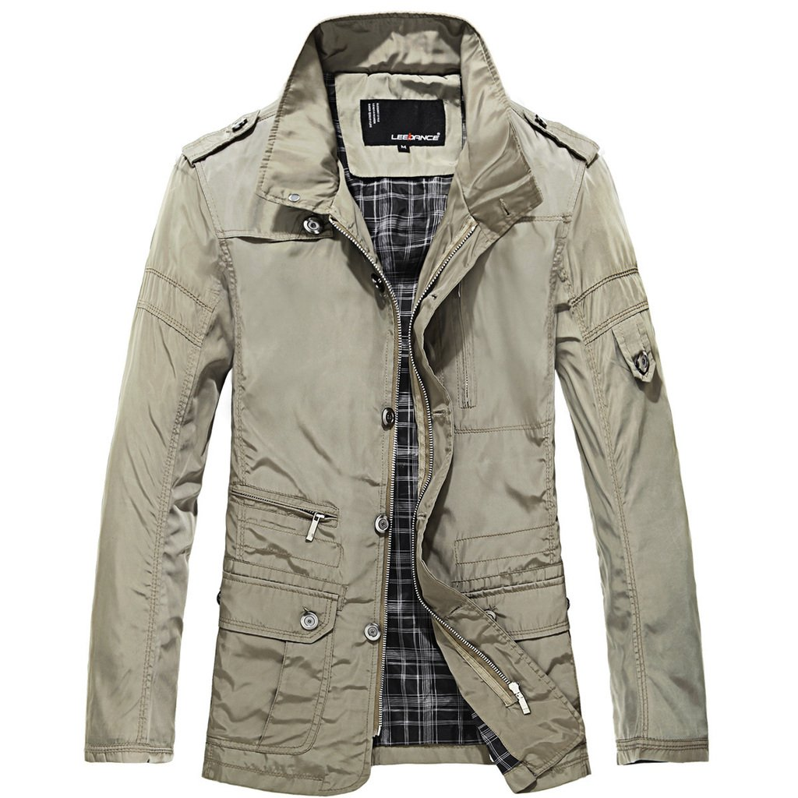

Welcome to striukes
Striukės internetu | itin kokybiškos Jack Wolfskin striukės - ROVANA.LT
2020.10.27 08:21Susisiekite dabar: +370 687 59246 Klauskite Prisijungti Krepšelyje x 0 (tuščia)
Prekių nėra
Turi būti nustatyta Pristatymas 0,00 € VisoPirkti
Prekė sėkmingai pridėta į krepšelį Kiekis Viso Krepšelyje yra 0 prekė (-ės). Krepšelyje yra 1 prekė. Prekės viso Viso pristatymas Turi būti nustatyta Viso Tęsti apsipirkimą Pereiti prie apmokėjimo Meniu Prekiniai ženklaiADMIRAL
AKARA
ALPINO
ATK
Baffin
Baladéo
BESTARD
BLACK FOX
BRESSER
BYRON
CARPEX
COLMIC
CORMORAN
CROSSNAR
CUKK
DAIWA
DRAGON
DUEL
ELEKTROSTATYK
Energizer
EXPERT
FLADEN
FLAMBEU
GARBOLINO
GENLOG
GERBER
GERMINA
HAYABUSA
HELLE
HERAKLES
HERBERTZ
JackWolfskin
KamadoCLUB
Kiwami
LADYA
LiteXpress
MARES
MCUSTA
Mycamp
MYRAN
NEBO
NEVERLAND
Nextorch
Nieto
Nils Master
OPTIMUS
OZOOM
POLYVER
PROWESS
Puma-tec
RECTA
ROBINSON
RYOBI
SAKURA
SEA FOX
SELECT
SERT
SIGG
Stanley
Tandem Baits
Thermowave
TOYOKUNI
TRIMM
Vaino
VICTORINOX
YO-ZURI
ZIPPO
Zojirushi
/Produktai/Apranga/Laisvalaikio apranga/Striukės Menu Žvejyba Meškerės Ritės Blizgės Pavadėliai plėšrioms žuvims Kabliukai Vobleriai Valai Plūdės Jaukai ir priedai Minkšti masalai Dėžės ir žvejo krepšiai Dėklai Graibštai Stovai Kibimo indikatoriai Šėryklos Gyvi masalai Masalai žūklei jūroje Suktukai, segtukai, žiedeliai, svareliai Žieminė žvejyba Žvejybos įrankiai Valtys, Variklai, Elektronika Aksesuarai Apranga Apranga Apranga žvejybai Termo rūbai Laisvalaikio apranga Slidinėjimo apranga Aprangos aksesuarai Veido kaukės APRANGA ŽVEJYBAI TERMO RŪBAI STRIUKĖS LAISVALAIKIO APRANGA AKSESUARAI Avalynė Avalynė Batai žvejybai Medžiokliniai batai Turistiniai batai Laisvalaikio batai Žieminiai batai Avalynės aksesuarai ir priežiūros priemonės BATAI ŽVEJYBAI MEDŽIOKLINIAI BATAI TURISTINIAI BATAI LAISVALAIKIO BATAI ŽIEMINIAI BATAI AVALYNĖS AKSESUARAI Turizmas ir laisvalaikis Turistinis inventorius Palapinės ir skėčiai Miegmaišiai Turistiniai Kilimėliai, pagalvėlės Turistinės kėdės Turistinės lovos - gultai Turistinės Viryklės Rūkyklos Komposai Turistinės lempos Gertuvės, termosai, termo puodeliai Kelioniniai termosai Pietų termosai ir priešpiečių dėžutės Termo gertuvės Gertuvės Vaikiškos gertuvės Termo puodeliai KamadoClub kepsninės ir kepimo priedai KamadoClub kepsninės KamadoClub kepsninių dalys Kamado kepsninių priedai kepimui ir rūkymui Kamado kepsninių priedai aksesuarai PEILIAI Kišeniniai peiliai Mėtymui skirti peiliai Medžiokliniai peiliai Turistiniai peiliai Daugiafunkcinės replės, įrankiai Virtuviniai peiliai ir virtuvės reikmenys Kąstuvai- kirviai Peilių Galąstuvai Kišeniniai Peiliai su lietuviška simbolika Peilių aksesuarai Laisvalaikio prekės Prožektoriai Ugnies žiebtuvėliai Akiniai Zippo žiebtuvėliai Pirmos pagalbos rinkiniai Žiūronai Vandens pramogos Kaukės Plaukmenys Vandens batai Kojinės Kuprinės Kuprinės Turistinės kuprinės Miesto kuprinės Krepšiai ir rankinės Kuprinės dviratininkams Kuprinės vaikams Kuprinės kompiuteriui Kosmetinės ir kiti aksesuarai MOKYKLINĖS KUPRINĖS TURISTINĖS KUPRINĖS KUPRINĖS KIEKVIENAI DIENAI KREPŠIAI IR RANKINĖS KUPRINĖS DVIRATININKAMS AKSESUARAI Naujienos Akcijos Kontaktai Dovanų kuponas Atsiskaitymo būdai Apranga > Laisvalaikio apranga > StriukėsStriukės
Vyriškos striukės Vasarinės striukės Žieminės vyriškos striukės Softshell vyriškos striukės Hardshell vyriškos striukės Flisinės striukės Striukės nuo vėjo ir lietaus Paltai ir parkos vyrams 3 in 1 striukės Moteriškos striukės Vasarinės striukės Žieminės moteriškos striukės Softshell moteriškos striukės Flisinės striukės Striukės nuo vėjo ir lietaus Paltai ir parkos moterimsFiltruoti:
Kraunama...
Striukės
Striukės vyrams ir moterims . Aukštos kokybės Jack Wolfskin striukės, kurios ne tik stilingos, bet ir naudojamos pažangios technologijos. Striukės neperšlampamos, neperpučiamos, nebaisūs jokie vėjai. Jausitės saugiai ir jaukiai.
Rodyti: Tinklelis Sąrašas Ankstesnis 1 2 3 ... 10 Tęsti Greita peržiūra 299,95 €Vyriška striukė JACK WOLFSKIN GLACIER...
Ši žieminė striukė yra labai praktiška ir ypatingai šilta dėl MICROGUARD sintetinio pluošto izoliacijos. "TEXAPORE" išorinis audinys apsaugo jus nuo lietaus ir vėjo. Art.Nr. 1107673
299,95 € Į krepšelį Daugiau Pageidavimai Greita peržiūra 199,95 €Vyriška žieminė striukė Jack Wolfskin...
"NORRLAND" yra klasikinė Vyriška žieminė striukė 3-in-1 derinys, kurį sudaro vandeniui atspari išorinė striukė ir šiltas vidinis švarkas iš vilnos. Striukė skirta dėvėti rudens ir pavasario sezonu. Art.NR.1110701
199,95 € Į krepšelį Daugiau Pageidavimai Greita peržiūra 199,95 €Vyriška žieminė striukė Jack Wolfskin...
"NORRLAND" yra klasikinis Vyriška žieminė striukė 3-in-1 derinys, kurį sudaro vandeniui atspari išorinė striukė ir šiltas vidinis švarkas iš vilnos. Striukė skirta dėvėti rudens ir pavasario sezonu. Art.Nr.1110701
199,95 € Į krepšelį Daugiau Pageidavimai Greita peržiūra 219,95 €Vyriška žieminė striukė JACK WOLFSKIN...
JASPER FLEX vyriška žieminė striukė neperšlampama striukė, kuri puikiai tiks ne tik geru oru, bet ir drėgnu.
219,95 € Į krepšelį Daugiau Pageidavimai Greita peržiūra 199,95 €Vyriška žieminė striukė Jack Wolfskin...
"NORRLAND" yra klasikinė Vyriška žieminė striukė 3-in-1 derinys, kurį sudaro vandeniui atspari išorinė striukė ir šiltas vidinis švarkas iš vilnos. Striukė skirta dėvėti rudens ir pavasario sezonu. Art.Nr.1110701
199,95 € Į krepšelį Daugiau Pageidavimai Greita peržiūra 99,95 €Vyriška striukė Jack Wolfskin STORMY POINT...
Paprasta, funkcionali ir visiškai patikima Vyriška striukė nuo lietaus ir vėjo. Tai yra viena lengviausių vyriškų striukių JW kolekcijoje. Ir nors audinys jaučiasi maloniai minkštas, jis taip pat yra ypač tvirtas. Night Blue #1111141
99,95 € Į krepšelį Daugiau Pageidavimai Greita peržiūra 129,95 €Vyriška striukė nuo lietaus ir vėjo Jack...
Funkcionali Vyriška striukė nuo lietaus ir vėjo Jack Wolfskin EVALANDE, orui nepralaidi, lengvai priglundanti, tiesios formos, pagaminta iš kvėpuojančios, vėjui ir vandeniui nepralaidžios medžiagos. Vyriška striukė nuo lietaus ir vėjo su paslėptu kapišonu, sutvirtintos siūlės, aukšta apykaklė, paslėptos užsegamos šoninės kišenės ir užtrauktukas su smakro...
129,95 € Į krepšelį Daugiau Pageidavimai Greita peržiūra 129,95 €Vyriška striukė nuo lietaus ir vėjo Jack...
Funkcionali Vyriška striukė nuo lietaus ir vėjo, orui nepralaidi, lengvai priglundanti, tiesios formos, pagaminta iš kvėpuojančios, vėjui ir vandeniui nepralaidžios medžiagos. Vyriška striukė nuo lietaus ir vėjo su paslėptu kapišonu, sutvirtintos siūlės, aukšta apykaklė, paslėptos užsegamos šoninės kišenės ir užtrauktukas su smakro apsauga. HARDSHELL...
129,95 € Į krepšelį Daugiau Pageidavimai Greita peržiūra 109,95 €Vyriška SOFTSHELL striukė neperpučiama...
Vyriška Soffshel striukė sukurta reikliems turistams eiti į žygius arba mėgstantiems plaukioti baidarėmis. Pagamintas iš STORMLOCK audinio, kuris yra atsparus vandeniui, vėjui. Jis taip pat yra labai stiprus ir labai kvėpuojantis. Maroon red #1304001
109,95 € Į krepšelį Daugiau Pageidavimai Greita peržiūra 109,95 €Vyriška softshell striukė JACK WOLFSKIN...
Vyriška Soffshel striukė sukurta reikliems turistams eiti į žygius arba mėgstantiems plaukioti baidarėmis. Pagamintas iš STORMLOCK audinio, kuris yra atsparus vandeniui, vėjui. Jis taip pat yra labai stiprus ir labai kvėpuojantis. Art.Nr.1304001
109,95 € Į krepšelį Daugiau Pageidavimai Greita peržiūra 109,95 €Vyriška softshell striukė JACK WOLFSKIN...
Vyriška Soffshel striukė sukurta reikliems turistams eiti į žygius arba mėgstantiems plaukioti baidarėmis. Pagamintas iš STORMLOCK audinio, kuris yra atsparus vandeniui, vėjui. Jis taip pat yra labai stiprus ir labai kvėpuojantis. Art.Nr.1304001
109,95 € Į krepšelį Daugiau Pageidavimai Greita peržiūra 109,95 €Vyriska softshell striukė JACK WOLFSKIN...
Vyriška Soffshel striukė sukurta reikliems turistams eiti į žygius arba mėgstantiems plaukioti baidarėmis. Pagamintas iš STORMLOCK audinio, kuris yra atsparus vandeniui, vėjui. Jis taip pat yra labai stiprus ir labai kvėpuojantis. Art.Nr.1304001
109,95 € Į krepšelį Daugiau Pageidavimai Ankstesnis 1 2 3 ... 10 TęstiNemokamas pristatymas Lietuvoje užsisakius virš 99 Eur
Prekių pristatymas Lietuvoje per 2-3 D.D.
Pinigų gražinimo garantija
Prekių pirkimas nesiregistravus
Saugus apsipirkimas
Informacija
Naujos prekės Perkamiausios Mūsų parduotuvės Susisiekite su mumis Apie mus Taisyklės ir naudojimo sąlygos Karjera Lojalumo programa Prekių pristatymas, grąžinimas ir taisyklės Svetainės žemėlapisMano paskyra
Mano užsakymai Mano suteiktos nuolaidos Mano adresai Mano asmeninė informacija Mano kuponaiParduotuvės informacija
UAB Rovana, Sudervės g.8J, Avižieniai, Vilniaus rajono savivaldybė. (Didmeninė prekyba ir el.parduotuvė) Susisiekite dabar: +370 687 59246 El. paštas: info@rovana.lt Rovana - Žūklės, Laisvalaikio ir Turizmo Prekės © 2020 Visos teisės priklauso UAB Rovana